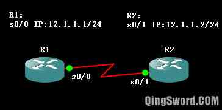

[CCNA图文笔记]-8-Cisco路由CLI基础命令
引言
这篇文章介绍Cisco路由器基础命令；包括全局配置模式、配置路由名称、设置特权密码、Console线路密码、AUX线路密码、配置远程访问、设置路由接口IP等。
文章目录
- 0×1.实验环境介绍
- 0×2.基础命令详解
- a.路由操作模式
- b.全局配置模式
- c.配置路由器主机名
- d.配置特权模式密码
- e.路由设置控制端口（Console）和远程调试端口（AUX）密码
- f.如何进入接口配置模式
- g.配置接口IP并开启接口
- h.设置命令输入同步模式
- i.配置远程登录（VTY）
- j.配置路由内部时钟
- k.配置路由旗帜(banner)消息
- l.命令简写与补全
- m.其他常用命令
- 0×3.R1远程登录R2实例
0×1.实验环境介绍
本系列文章大部分实验都使用GNS3+IOU进行，如有特殊情况会在文中注明，路由IOS版本为"c3640-ik9o3s-mz.124-10.bin“，交换机使用的是IOU中的"i86bi-linux-l2-adventerprisek9-15.1a.bin"；
本例实验拓扑图如下：
两台c3640路由器，添加了一个"NM-4T"（串口）模块，R1的s0/0和R2的s0/1相连，假设s0/0端为DCE端(需要配置时钟同步率)，s0/1为DTE端，IP地址如图上所示。
GNS3中，在路由启动之前，右击路由选择"Configure"->"Slots"可以给路由添加接口模块；设备启动后，双击图标即可打开CLI（Command Line Interface，命令行接口），或使用上一篇文章中介绍的PAC等终端连接管理器；如果想要显示接口编号在GNS3菜单中"View"->"Show/Hide interface labels"打钩；
Tip：在Cisco Packet Tracer模拟器中，如果没有保存配置文件，启动时会出现下面的信息；
--- System Configuration Dialog --- Continue with configuration dialog? [yes/no]: /*在这里输入no就可以了*/ /*因为我们需要手动配置，不需要按照向导来配置*/
下面先拿R1来对各种命令进行详细的解释，在本文第三节中再对上面的拓扑做一次连贯的实验。
0×2.基础命令详解
注意：因为GNS3对设备启用了默认的配置文件，在Ubuntu系统中，这些配置文件在当前用户的家目录中，如下：
/*这四个文件分别是路由IOS默认配置文件，IOU虚拟机中3层设备和2层设备（交换机）的配置文件，以及vpcs默认的配置文件*/ qing@qingsword.com:~/GNS3/configs$ ls ios_base_startup-config.txt iou_l3_base_startup-config.txt iou_l2_base_startup-config.txt vpcs_base_config.txt
在Windows中，这些配置文件应该也存放在GNS3安装目录，大家可以自己找一下，找到这些文件后，将它们全部备份，然后将它们的内容全部清空，这样做是为了让设备启动时以最初始的状态进入CLI，等我们理解了这些基础命令后，再将配置文件重新恢复，配置文件使得我们无需每次启动一台设备都手动输入一些基础命令；
清空配置文件后，使用GNS3搭建出第一节所示的拓扑，启动R1，进入R1的CLI。（如果是清空配置前就启动了GNS3并且搭建了拓扑，配置已经被加载了，所以请先清空默认配置再启动GNS3）
a.路由操作模式
/*第一次进入路由CLI，我们看到的可能是下面这个样子,Router是初始化的路由默认名称，后面的>代表当前处在用户模式，特权模式的提示符为#*/ Router> /*完整命令*/ /*命令进入特权模式*/ Router>enable /*退出特权模式*/ Router#disable Router> /*命令简写*/ /*命令进入特权模式*/ Router>en /*退出特权模式*/ Router#disa Router>
b.全局配置模式
/*进入特权模式后使用下面的命令可以进入全局配置模式*/ Router# configure terminal Enter configuration commands, one per line. End with CNTL/Z. Router(config)# /*命令简写*/ Router# conf t Router(config)#
c.配置路由器主机名
/*Router被更名为R1*/ Router(config)#hostname R1 R1(config)# /*命令简写*/ Router(config)#host R1 R1(config)#
d.配置特权模式密码
因为特权模式的权限非常高，可以执行路由IOS中所有支持的命令，所以为了安全需要给特权模式设置密码
/*第一种特权密码设置方式，这种方式密码不会被加密*/ R1(config)#enable password 123456 /*第二种特权密码设置方式，这种方式密码会被MD5加密，同时配置这两种加密方式，secret会覆盖password，推荐*/ R1(config)#enable secret 123456 /*设置完密码后可以测试一下，首先用exit退回到用户模式下（每次输入exit回车，都会退回上一层命令环境）*/ R1(config)#exit R1#exit R1>en Password: /*输入密码123456才能进入特权模式*/ R1#
e.配置路由设置控制端口（Console）和远程调试端口（AUX）密码
我们现在使用的是模拟器，实际在真实环境中，我们是通过全反线连接到路由的Console接口上对路由进行配置的，路由没有做任何配置时，这个接口是没有密码的，也就是说任何人只要用配置线接到这个接口上，就能进入路由CLI下。所以Console接口也需要设置密码。AUX接口是用于远程调试的，也可以用于本地配置，所以也需要设置密码。
/*设置Console接口密码，password后面接你要设置的密码*/ /*注意，密码是允许尾部带空格的，不允许首部带空格*/ R1(config)#line console 0 R1(config-line)#password 123456 R1(config-line)#login /*设置AUX接口密码*/ R1(config-line)#line aux 0 R1(config-line)#password 123456 R1(config-line)#login R1(config-line)#exit R1(config)# /*命令简写*/ R1(config)#line co 0 R1(config-line)#pass 123456 R1(config-line)#login R1(config-line)#line aux 0 R1(config-line)#pass 123456 R1(config-line)#login R1(config-line)#exit R1(config)# /*此时如果exit退出控制台重新连接，在进入CLI前就会要求输出接入密码，而这个密码就是控制端口密码，如果接入的是AUX端口同理*/ R1(config)# exit R1# exit User Access Verification Password:
f.如何进入接口配置模式
/*在全局配置模式下可以使用下面的命令进入接口配置模式*/ R1(config)#interface serial 0/0 R1(config-if)# /*本例进入了R1的串口s0/0，之后就可以配置IP了，命令简写形式如下*/ R1(config)#int s0/0 R1(config-if)#
g.配置接口IP并开启接口
/*给s0/0配置ip，子网掩码*/ R1(config-if)#ip address 12.1.1.1 255.255.255.0 /*在DCE端需要配置时钟同步率*/ R1(config-if)#clock rate 64000 /*设置接口描述，这一步不是必须的，但是如果有描述就好像程序有注释一样*/ R1(config-if)#description "this port is link to R2 s0/1" /*如果要给这个接口配置多个IP可以这样*/ R1(config-if)#ip address 12.2.2.1 255.255.255.0 secondary /*启用这个接口*/ R1(config-if)#no shutdown /*命令简写*/ R1(config-if)#ip add 12.1.1.1 255.255.255.0 R1(config-if)#clock rate 64000 R1(config-if)#ip add 12.2.2.1 255.255.255.0 sec R1(config-if)#no shut
h.设置命令输入同步模式
大家到这里可能会发现，输入命令的时候，经常会有路由返回的各种消息打断了你的输入，虽然可以使用"Ctrl+R"来将当前输入转移到新行继续输入，但是这样非常不方便，可以通过下面的命令来让路由返回的消息不影响你的输入：
/*设置console线路同步模式，这样路由返回的消息就不会打断输出了*/ R1(config)#line console 0 R1(config-line)#logging synchronous /*设置console线路命令输入永不超时（不配置这个，在一段时间没有输入后，就会断开连接）*/ R1(config-line)#exec-timeout 0 0 /*end命令可以一次性退到特权模式最外层，exit是一次退一步*/ R1(config-line)#end R1# /*命令简写*/ R1(config)#line co 0 R1(config-line)#logg syn R1(config-line)#exec-t 0 0 R1(config-line)#end R1#
i.配置远程登录（VTY）
远程登录允许远程通过Telnet、SSH等对路由进行远程访问和管理；路由必须配置特权密码，这样远程用户才能进入特权模式，否则远程用户连接上设备后是无法进入特权模式的。
/*如果路由没有配置特权密码先配置特权密码*/ R1(config)#enable secret 123456 /*设置允许5条并发线路对此路由的远程访问(0-4)*/ R1(config)#line vty 0 4 R1(config-line)#pass vtppass /*连接密码vtppass*/ /*这一句的作用是要求输入登录密码，如果是no login远程登录将不需要密码*/ R1(config-line)#login R1(config-line)#exit /*下面的可选配置将仅允许12.1.1.2这一个IP远程登录此路由*/ R1(config)#access-list 1 permit 12.1.1.2 R1(config)#line vty 0 4 R1(config-line)#access-class 1 in R1(config-line)#end R1#
j.配置路由内部时钟
/*首先需要在全局配置模式下设置时区*/ R1(config)#clock timezone GMT +8 R1(config)#exit /*然后在最外层特权模式下配置时钟，格式clock set 小时:分钟:秒 月 日 年*/ R1#clock set 11:54:00 october 22 2012 /*2012年10月22日的11点54分*/
k.配置路由旗帜(banner)消息
关于旗帜消息，大家可以在全局配置模式中输入"banner ?"去一个个的尝试，包含了不同的登陆方式可以显示的提示信息。
R1(config)#banner ? exec Set EXEC process creation banner login Set login banner ... /*配置登陆console前会被显示的信息，要输入的信息包含在一对特殊字符中，本例是星号，可以使用回车让信息显示在多行*/ R1(config)#banner login * Enter TEXT message. End with the character '*'. AAAAAA BBBBBB CCCCCC DDDDDD * /*配置console登陆后的提示信息*/ R1(config)#banner exec *Hello Welcome to R1* R1(config)#exit R1#exit ...: Configured from console by console /*login配置的信息在未登录的时候就被显示出来了*/ AAAAAA BBBBBB CCCCCC DDDDDD User Access Verification Password: /*输入console密码后显示exec配置的信息*/ Password: Hello Welcome to R1 R1>
l.命令简写与补全
在Cisco IOS中的所有命令都可以使用和Linux一样的[tab]键来补全，并且这些命令大多都有简写形式；那么怎么才能知道一个命令可以被简写成什么样子呢？只要输入几个字符，能够被[tab]键补全，就能够使用那几个字符作为简写形式，例如：
/*进入全局配置的configure命令，在输入conf的时候就能被键盘上的[Tab]键补全，所以conf就是configure的简写形式，其余命令以此类推*/ R1#co[Tab] R1#con[Tab] R1#conf[Tab] R1#configure
m.其他常用命令
/*查看当前全局配置（运行时配置），简写sh run*/ R1#show running-config /*将当前全局配置写入启动配置，简写wr*/ R1#write /*查看启动配置，简写sh star*/ R1#show startup-config /*查看接口是否开启，简写sh ip int b*/ R1#show ip interface brief /*查看接口详细参数，简写sh int*/ R1#show interfaces /*查看接口IP相关参数，简写sh ip int*/ R1#show ip interface /*查看远程连接用户，简写sh u*/ R1#show users
0×3.R1远程登录R2实例
请根据本文第一节中的拓扑图连接好R1和R2并启动它们。
R1配置如下：
Router>en Router#conf t Router(config)#host R1 Router(config)#enable secret 123456 R1(config)#line co 0 R1(config-line)#logg syn R1(config-line)#exec-t 0 0 R1(config-line)#pass test R1(config-line)#exit R1(config)#int s 0/0 R1(config-if)#ip add 12.1.1.1 255.255.255.0 R1(config-if)#no shut R1(config-if)#end R1#
R2配置如下：
Router>en Router#conf t Router(config)#host R2 R2(config)#enable secret test2 /*配置特权密码*/ R2(config)#line vty 0 4 /*配置远程访问线路*/ R2(config-line)#pass 123456 /*远程访问密码*/ R2(config-line)#login R2(config-line)#exit R2(config)#line co 0 R2(config-line)#logg syn R2(config-line)#exec-t 0 0 R2(config-line)#exit R2(config)#int s 0/1 /*配置与R1相连的接口IP*/ R2(config-if)#ip add 12.1.1.2 255.255.255.0 R2(config-if)#no shut R2(config-if)#end
测试R1连接R2：
R1#telnet 12.1.1.2 Trying 12.1.1.2 ... Open User Access Verification Password: /*输入远程访问密码123456*/ R2>en Password: /*输入R2上的特权密码test2*/ R2# /*这样就进入了R2的特权模式了*/ /*将连接挂起（PAC下无效，仅在GNS3中双击图标进入控制台有效）*/ R2# 使用Crtl+Shift+6组合键，松开后马上按键盘上的x键，即可挂起远程登录,回到R1 R1# /*在R1上使用Show sessions可以看到挂起的会话，可以看到会话编号是1*/ R1#show sessions Conn Host Address Byte Idle Conn Name * 1 12.1.1.2 12.1.1.2 0 0 12.1.1.2 /*直接输入1或直接回车可登回到R2*/ R1# 1 R2# /*在R2上可以查看登录到本地的链接，0是本地console连接，130那个vty是R1的链接，可以看到它的IP:12.1.1.1*/ R2#show users Line User Host(s) Idle Location * 0 con 0 idle 00:00:00 130 vty 0 idle 00:01:19 12.1.1.1 /*在R2上使用命令强行断开某链接,输入命令回车确认即可*/ R2#clear line 130 [confirm] /*回车确认*/ [OK] R2# /*或R1主动退出登录*/ R2#exit R1#